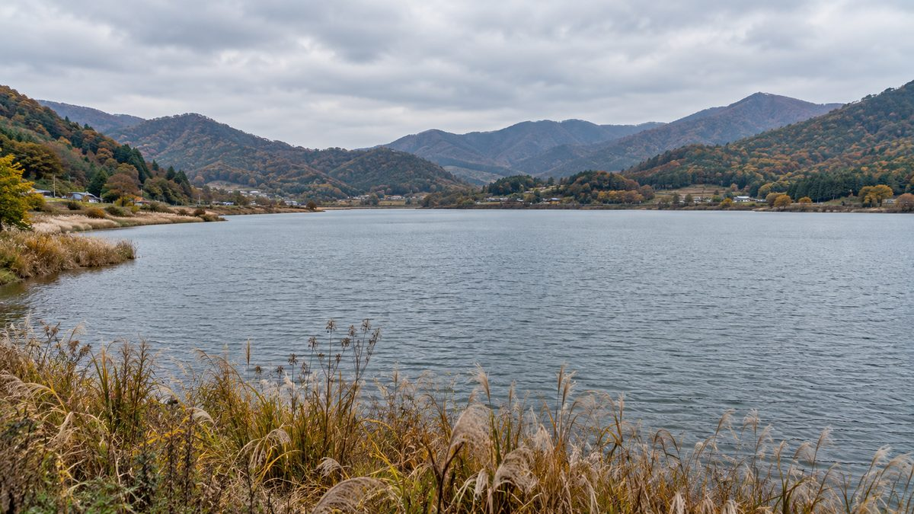
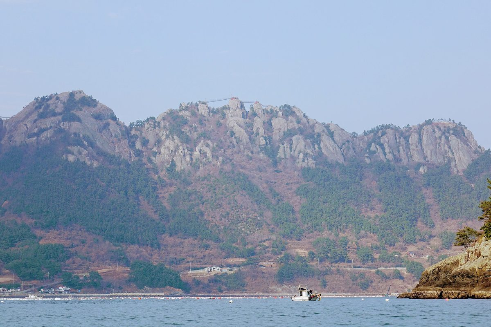
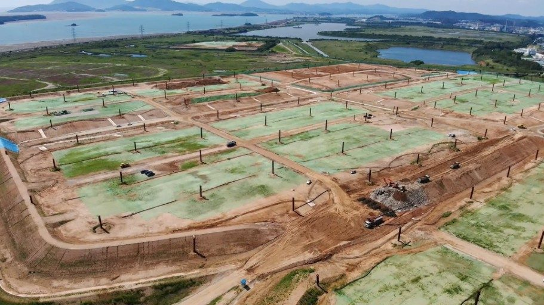
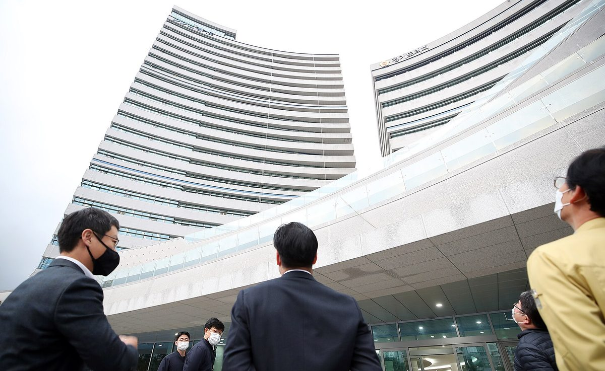
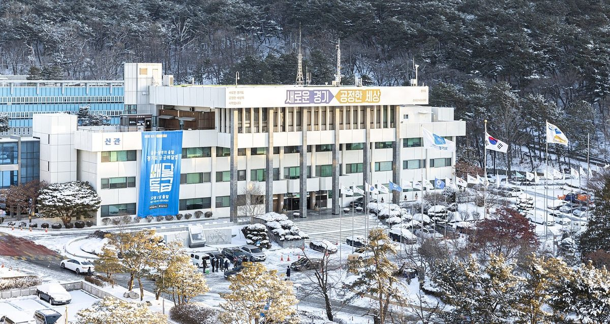
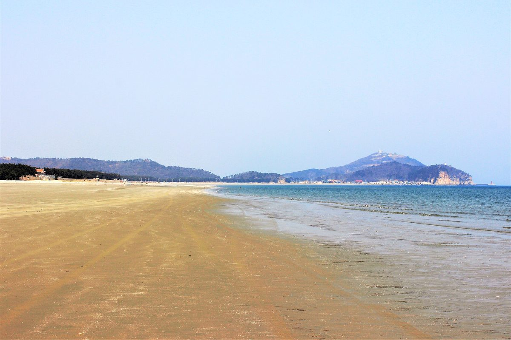
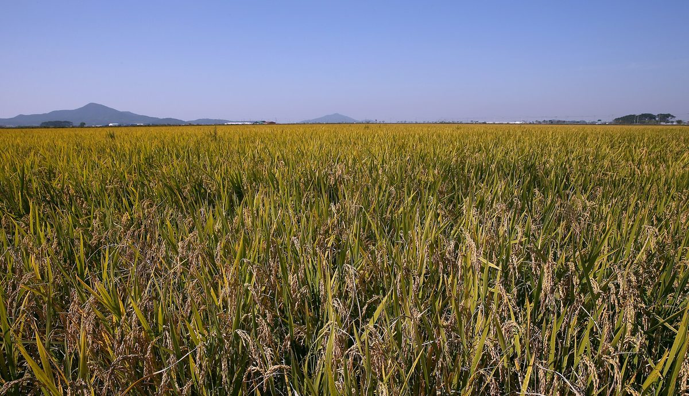

사회
나주호 수상태양광 9년 갈등, 찬성 측도 "처음 원한 건 주민참여형"…주민수용성 판단 기준은 여전히 비공개
반대 측 "사업 내용 물으니 설명회 때 말하겠다", 찬성 측 "지금은 기업 주도 사업"…주민 범위·대표·투표·배치안 모두 엇갈려, 전기위원회 보완 기한은 12월 초

섬까지 번진 태양광 사업에 통영 곳곳 주민 반대…경남 1MW 이상 발전사업 허가 신청 올해만 200건
사량도 마을 뒷산 사업 소식에 주민 탄원, 도산면 상촌마을은 시청 앞 집회 열고 허가 거부나 이주 요구…통영시는 법적 결격 없어 거부 어렵다는 입장, 전라도 계통 포화로 경남에 몰린다는 분석

인천시, 수도권매립지 2매립장 상부 154만㎡ 쓰임새 '시민 숙의' 29일 첫발…정부 태양광 제안에 주민 반대
시민 50명 학습마당 시작으로 2027년 1월 정책권고안 마련 계획…태양광·공원 등 활용 방안 아직 정해지지 않아

경기도, 내년 사회연대경제 예산 56.5% 깎은 편성안…경기도사회적경제원 사업비 0원
사회혁신경제국 소관 567억 원에서 247억 원으로, 사업 51개는 31개로…도비 사업은 신청액 절반만 반영, 11월 도의회 심의

경기도, 사회연대경제기본법 시행 앞두고 전담 사회혁신경제국 폐지 추진
조직개편안 입법예고…경제부지사 산하 6개 실·국을 3개로, 경제산업실 분장사무엔 사회연대경제 한 줄만 남아

함평군 사회단체협의회, 8GW 재생에너지 특구 지정 요구 서명운동…11월 12일까지 군민 90% 목표
오민수 협의회장, 특별법 제정·주민주도형 분산에너지 특화지역·RE100 국가산단 유치·이익공유 법적 보장 등 4가지 요구…특구·변전소·산단은 정해진 것 없는 민간 구상

인천 시민사회, 박찬대 시장에 민간 해상풍력까지 조정하라 재차 요구…서해5도 여객선 항로 보호 촉구
인천평화복지연대 입장문, 어업인·섬 주민이 대등하게 참여하는 상설 민관협의체와 '시민참여 바람소득' 요구…인천 앞바다 공공 2GW·민간 5GW 등 7GW 이상 추진, 기존 민관협의회는 공공사업만 다뤄

완주 주민 202명, 신정읍~신계룡 송전선로 입지선정위 결의 무효 확인 소송 3차 변론…주민대표 구성 쟁점
원고 측 "주민대표 30명 중 19명이 그 지역에 살지 않는 지방의원" 주장, 한전은 위원장 선출 영상 대신 사진 제출 방침…4차 변론 11월 5일

부안군, 기본사회센터 신설…2027년부터 태양광 수익 주민 배분 시범사업
지자체 첫 기본사회 전담 부서라고 밝혀…읍·면 유휴부지 조사로 태양광 입지 검토, 2030년까지 기본소득 재원 마련 계획

주택 5호 미만이면 이격거리 보호 못 받아…강릉 귀촌 부부 민박집 90m 앞에 태양광 추진
9월 시행 재생에너지법 시행령, 5호 이상 주거지에만 최대 200m 적용하고 조례로 낮추지도 못하게 해…강릉시는 거리로 규제 어렵다는 입장, 영광 풍력 소음 마을은 4년째 소송

社会
羅州湖の水上太陽光、9年に及ぶ対立…賛成側も「最初に望んだのは住民参加型」、住民受容性の判断基準はなお非公開
反対側「事業内容を尋ねると説明会で話すと」、賛成側「今は企業主導の事業」…住民の範囲・代表・投票・配置案のすべてで食い違い、電気委員会の補完期限は12月初め
島にまで広がる太陽光事業に統営の各地で住民が反対…慶南の1MW以上の発電事業許可申請、今年だけで200件
蛇梁島では集落の裏山の計画に住民が嘆願、道山面・上村集落は市庁前で集会を開き許可拒否か移住を要求…統営市は法的な欠格事由がなく拒否は難しいとの立場、全羅道の系統飽和で慶南に集まるとの分析
仁川市、首都圏埋立地第2埋立場の上部154万㎡の使い道を「市民熟議」で 29日に第一歩…政府の太陽光案に住民は反対
市民50人の学習会を皮切りに2027年1月に政策勧告案をまとめる計画…太陽光・公園など活用策はまだ決まらず
京畿道、来年の社会連帯経済予算を56.5%削減する編成案…京畿道社会的経済院の事業費は0ウォン
社会革新経済局の所管予算は567億ウォンから247億ウォンに、事業数は51から31に…道費事業は申請額の半分のみ反映、11月に道議会で審議
咸平郡社会団体協議会、8GW再生可能エネルギー特区の指定を求める署名運動…11月12日までに郡民90%が目標
オ・ミンス協議会長、特別法の制定・住民主導型分散エネルギー特化地域・RE100国家産業団地の誘致・利益共有の法的保障など4項目を要求…特区・変電所・産業団地は何も決まっていない民間の構想
仁川の市民社会、パク・チャンデ市長に民間の洋上風力まで調整するよう再び要求…西海5島の旅客船航路の保護を訴え
仁川平和福祉連帯が声明、漁業者・島の住民が対等に参加する常設の官民協議体と「市民参加の風所得」を要求…仁川沖では公共2GW・民間5GWなど7GW以上を推進、既存の官民協議会は公共事業のみ扱う
完州の住民202人、新井邑～新鶏龍送電線路の立地選定委員会決議の無効確認訴訟で第3回弁論…住民代表の構成が争点
原告側「住民代表30人のうち19人がその地域に住んでいない地方議員」と主張、韓電は委員長選出の映像の代わりに写真を提出する方針…第4回弁論は11月5日
扶安郡が基本社会センターを新設…2027年から太陽光の収益を住民に配分するモデル事業
自治体初の基本社会専担部署と説明…邑・面の遊休地調査で太陽光の立地を検討、2030年までにベーシックインカムの財源確保を計画
住宅5戸未満なら離隔距離の保護なし…江陵に帰村した夫婦の民泊の90m先で太陽光計画
9月施行の再生可能エネルギー法施行令、5戸以上の住居地にのみ最大200mを適用し条例での引き下げも認めず…江陵市は距離での規制は難しいとの立場、霊光の風力騒音の村は4年目の訴訟
社会
罗州湖水上光伏冲突已9年，赞成方也称“最初要的是居民参与型”…居民接受度判断标准仍未公开
反对方称“询问项目内容，只说到说明会再讲”，赞成方称“现在是企业主导项目”…居民范围、代表、投票、布置方案全都各执一词，电气委员会补充期限为12月初
太阳能项目蔓延到海岛，统营多地居民反对…庆南1MW以上发电项目许可申请今年已达200件
蛇梁岛村后山项目引发居民请愿，道山面上村居民在市厅前集会要求不予许可或让其搬迁…统营市称无法律上的不合格理由难以拒绝，分析认为全罗道电网饱和使项目涌向庆南
仁川市就首都圈垃圾填埋场第二填埋场上部154万平方米用途启动"市民协商"，29日迈出第一步——政府提议建太阳能，居民反对
以50名市民参加的学习会为起点，计划于2027年1月形成政策建议案；太阳能、公园等利用方案尚未确定
京畿道明年社会连带经济预算编成案削减56.5%…京畿道社会经济院事业费为0韩元
社会革新经济局所管预算由567亿韩元降至247亿韩元，项目由51个减至31个…道费项目仅反映申请额的一半，11月道议会审议
咸平郡社会团体协议会发起签名运动，要求指定8GW可再生能源特区…目标在11月12日前征集90%郡民签名
协议会会长Oh Min-su提出制定特别法、指定居民主导型分布式能源特色区域、引进RE100国家产业园区、以法律保障利益共享等4项要求…特区、变电站和产业园区均未确定，仍是民间构想
仁川公民社会再次要求市长Park Chan-dae协调民间海上风电项目…呼吁保护西海五岛客轮航线
仁川和平福利联合发表声明，要求设立渔民和岛民平等参与的常设官民协商机构及"市民参与风力收入"机制…仁川近海正推进公共2GW、民间5GW等7GW以上项目，现有官民协议会只涉及公共项目
完州202名居民就新井邑至新鸡龙输电线路选址委员会决议无效确认诉讼进行第三次辩论…居民代表构成成为焦点
原告方称30名居民代表中有19名是不住在当地的地方议员，韩电拟以照片代替委员长选举录像提交…第四次辩论定于11月5日
住宅不足5户则不受间隔距离保护…江陵返乡夫妇民宿90米外拟建太阳能电站
9月施行的可再生能源法施行令只对5户以上居住地适用最多200米间隔，且不允许以条例下调…江陵市称难以用距离加以限制，灵光风电噪音村诉讼已进入第4年
Society
Nine years into the Naju Lake floating solar dispute, even supporters say "what we first asked for was resident participation"; criteria for judging local acceptance still undisclosed
Opponents say questions about the project were put off until a briefing, supporters say it is now company-led; residents' scope, representation, voting and layout all disputed, with the Electricity Commission's deadline in early December
As solar projects spread to islands, residents across Tongyeong push back; applications for 1MW-plus generation licences in South Gyeongsang reach 200 this year alone
Villagers on Saryangdo petition against a plan on the hill behind their village, while Sangchon villagers rally at city hall demanding refusals or relocation; city says it cannot refuse lawful applications, and the industry points to a saturated grid in the Jeolla provinces
Incheon opens citizens' deliberation on 1.54 million m² atop Sudokwon Landfill No. 2 on the 29th, as government solar proposal meets residents' opposition
A 50-member citizen learning session starts a process aimed at a policy recommendation in January 2027; whether the land goes to solar, a park or other uses is still undecided
Gyeonggi Province drafts 56.5% cut to next year's social and solidarity economy budget, with zero program funding for its Social Economy Center
Budget under the Social Innovation and Economy Bureau falls from 56.7 billion won to 24.7 billion won and programs from 51 to 31; province-funded programs get only half of what was requested; Provincial Council review in November
Residents and civic groups demand Gunsan's Oseongsan solar plant be scrapped, citing flawed consent process
Residents reaffirm opposition by secret ballot and form emergency committee; nine civic groups call for review and permitting to stop
Gyeonggi Province moves to abolish its dedicated social economy bureau ahead of Korea's new Social and Solidarity Economy Act
Reorganization plan pre-announced: six offices under the economic vice governor cut to three, and the social economy reduced to a single line in the new economy office's duties
Hampyeong civic groups' council launches petition for an 8GW renewable energy special zone, aiming for 90% of residents by November 12
Council chair Oh Min-su makes four demands including a special act, a resident-led distributed energy zone, an RE100 national industrial complex and legal guarantees for benefit-sharing; the zone, substation and complex remain an undecided civic proposal
Incheon civil society again urges Mayor Park Chan-dae to coordinate private offshore wind too, calls for protecting ferry routes to the five West Sea islands
Incheon Peace and Welfare Solidarity statement seeks a standing public-private council where fishers and islanders take part as equals and a "citizen wind income" scheme; over 7GW, including 2GW public and 5GW private, is planned off Incheon while the existing council covers only public projects
202 Wanju residents hold third hearing in suit to void siting committee decision on Sinjeongeup-Singyeryong power line, with resident-representative makeup at issue
Plaintiffs claim 19 of 30 resident representatives were local councillors who do not live in the area; KEPCO plans to submit photos instead of video of the chair's election; fourth hearing set for Nov. 5
Buan County sets up Basic Society Center and plans pilot sharing solar revenue with residents from 2027
County calls it the first local government unit dedicated to basic society; idle land in each town to be surveyed for solar sites, with basic income funding targeted by 2030
Homes in clusters of fewer than five lose setback protection as solar is planned 90m from Gangneung couple's guesthouse
Renewable energy decree in force since September applies setbacks of up to 200m only where there are five or more homes and bars local ordinances from going lower; Gangneung says it cannot regulate by distance, while a Yeonggwang village hit by wind turbine noise is in its fourth year of litigation